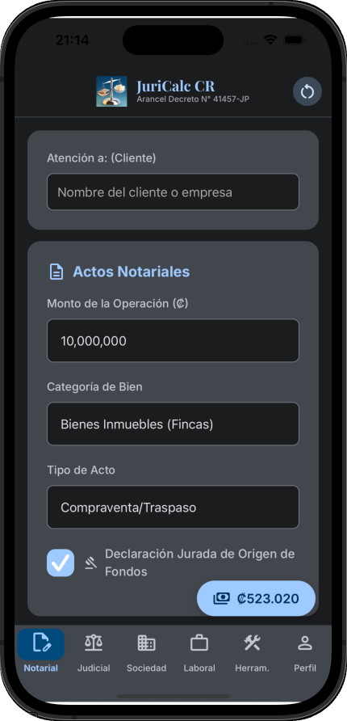
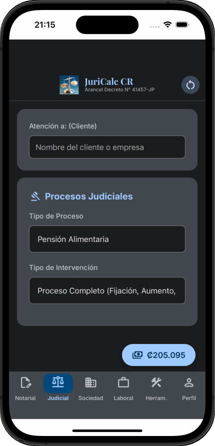
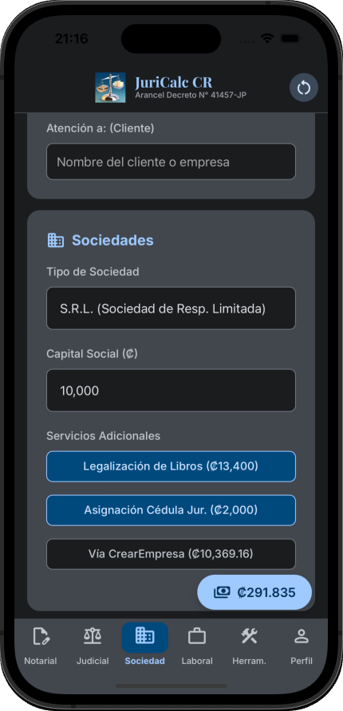
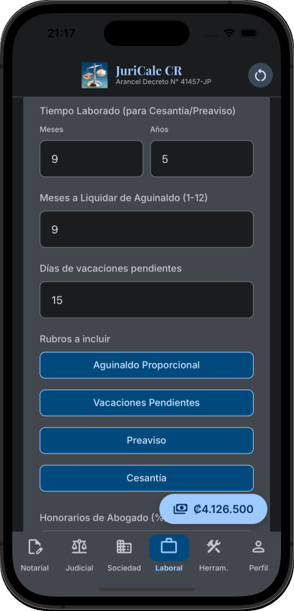

Módulo Notarial
Cálculos para traspasos, hipotecas y más.
Cálculo de Honorarios Notariales, Abogacía, Multas, Intereses y mucho más.
Módulos notarial, judicial, sociedades y laboral adaptados estrictamente a la normativa costarricense vigente.
Descargar en Google PlayGeneración de PDF, compartir por WhatsApp, buscador de aranceles, cálculo de honorarios profesionales, calculadora de multas e intereses, y más.

Cálculos para traspasos, hipotecas y más.

Procesos estimables, sucesorios y divorcios.

Constitución de empresas, reformas y timbres.

Liquidaciones, aguinaldos y cisantía.
Videos demostrativos de los principales módulos de cálculo.
Demo — Módulo
Demo — Módulo
Interfaz intuitiva y fácil de usar en dos modos “Claro” y “Oscuro”.
Procesamiento 100% local (sin datos en la nube) y trabajo sin internet. Su información nunca sale de su dispositivo.
Genere proformas profesionales en PDF y compártalas directamente por WhatsApp o correo electrónico.
Tasas oficiales del BCCR, tablas de Hacienda y soporte a reformas arancelarias del Decreto N° 41457-JP.
Todos los cálculos de honorarios profesionales, timbres registrales e impuestos incorporados en JuriCalc CR se ejecutan en estricto cumplimiento con el Decreto Ejecutivo N° 41457-JP — Arancel de Honorarios por Servicios Profesionales de Abogacía y Notariado.
Para garantizar la exactitud de sus proformas y evitar contingencias legales o fiscales, la plataforma integra: